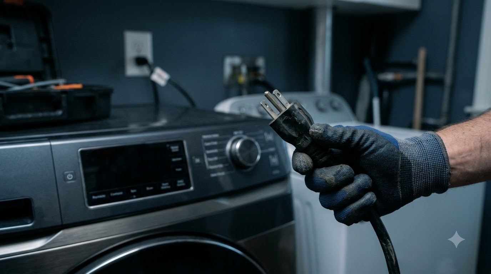
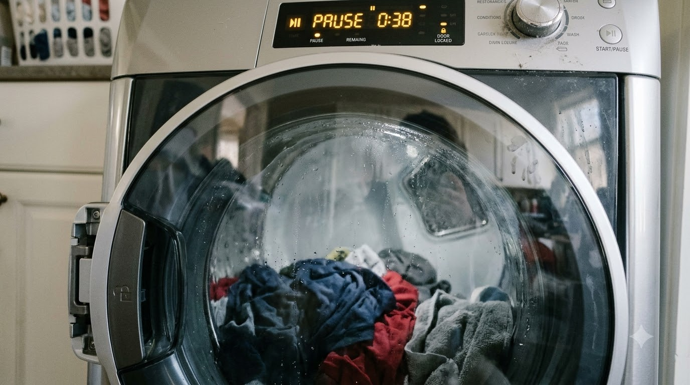
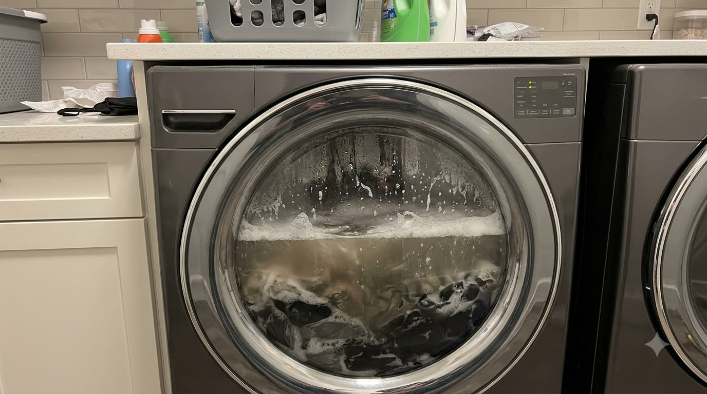
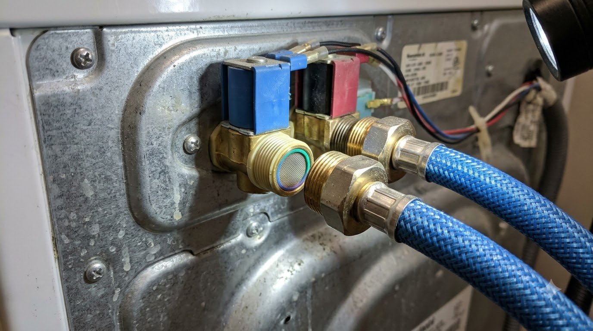
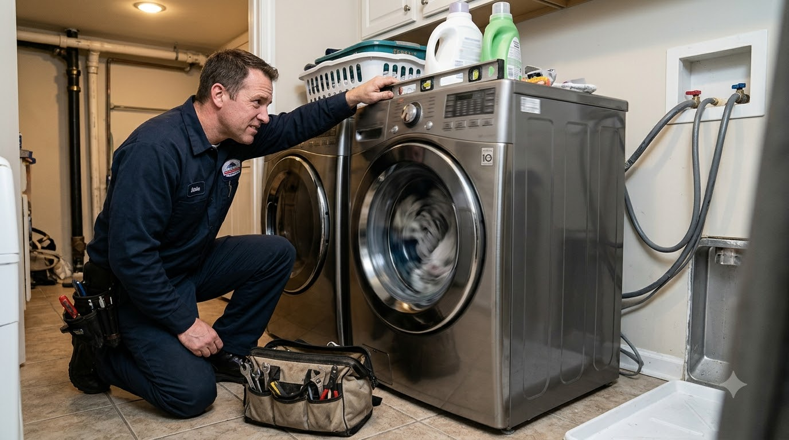
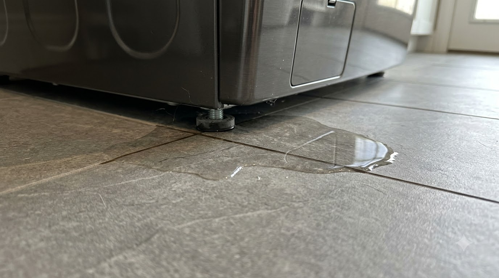
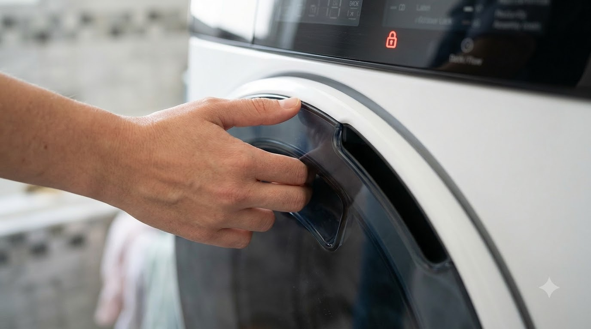
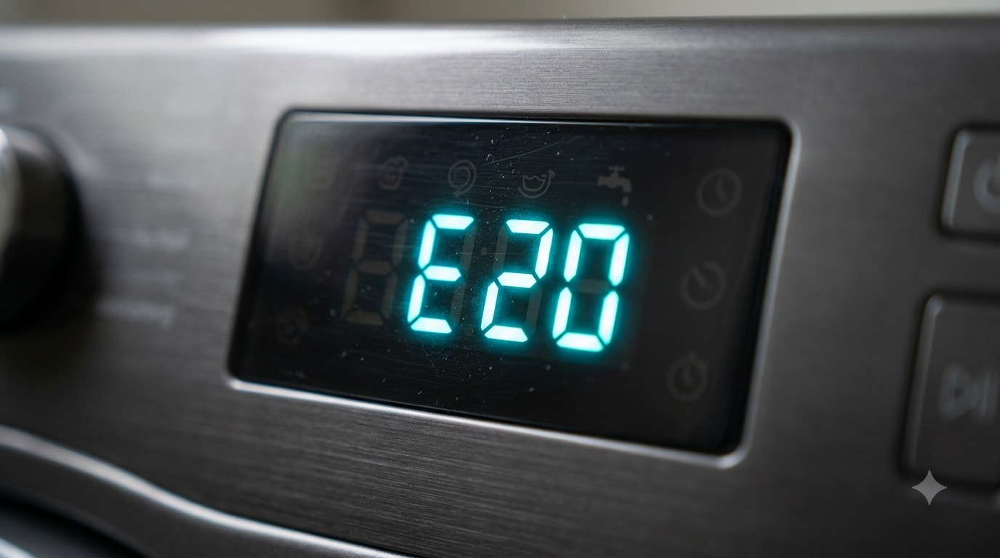
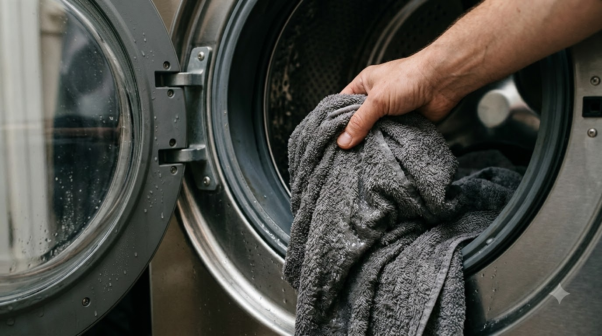
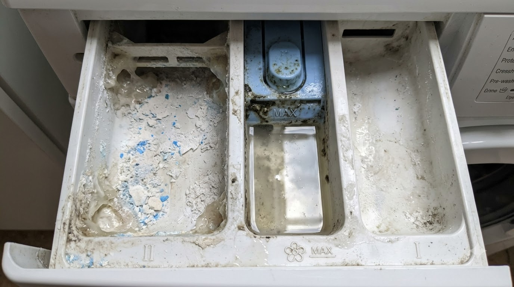

Explore common washing machine symptoms and understand when professional inspection may be needed. Review safe observations before scheduling a technician assessment.
Please review these precautionary measures before conducting any external observation.
A structured guide to understanding appliance symptoms, safe observations, and when professional diagnostic assessment is indicated.

The appliance appears completely dead with no lights, sounds, or display response upon pressing the power button.
Blank control console, unresponsive buttons, cycle selector knob has no effect, no audible relay clicks.
Power socket disconnection, tripped wall breaker, faulty noise suppressor, main PCB power module issue, or door interlock failure.
Ensure the power plug is firmly inserted. Safely test the wall socket using an independent lamp. Confirm the door is pushed shut.
If power to the socket is verified, but the machine remains unpowered or repeatedly trips the household breaker.

The machine fills with water and timer counts down, but the inner wash basket remains stationary throughout the wash or spin phases.
Faint motor humming without drum motion, clothes soaking wet at the end of the program, or motor running without turning the tub.
Severe laundry bundle imbalance, slipped/snapped drive belt, motor capacitor breakdown, worn carbon brushes, or direct drive motor inverter fault.
Unplug the machine and check if the drum turns smoothly by hand with no heavy mechanical friction or harsh metal scraping sounds.
If manual drum rotation is stiff, motor smells hot, or the drum will not spin even with an empty load.

Soapy wash water remains stagnant inside the tub at cycle conclusion, preventing high-speed spin and locking the access door.
Gurgling sounds, error codes related to drain timeout (e.g., 5E, E20, OE), water visible above the door rim, clothes swimming in water.
Coin or lint obstruction in the coin trap filter, kinked or crushed drain hose, clogged standpipe, or seized drain pump impeller motor.
Check the external drain hose for kinks or pinching against the back wall. Clean the external coin trap filter per the user manual with shallow trays ready.
If the external filter and drain hose are verified clean, but the pump hums without evacuating water or makes grinding noises.

The wash program starts and door clicks shut, but no water enters the dispenser or drum, causing the machine to pause or show a fill alert.
Buzzing sound from rear intake valves without water flow, dry detergent drawer, slow trickling fill, fill timeout errors (e.g., 4E, E10).
Closed home water tap, low household water pressure, sediment clogged in inlet hose filter screens, or failed water inlet solenoid valve.
Verify that adjacent household cold water taps run with normal pressure. Inspect the flexible supply hose to ensure the shut-off valve is fully open.
If household water pressure is normal and inlet screens are clear, but the internal solenoids fail to open upon command.

Violent shaking, loud thumping, banging against the outer cabinet, or appliance "walking" across the laundry floor during spin cycles.
Heavy thuds when accelerating to spin speeds, high-pitched jet-engine drone, machine rocking diagonally when pushed at opposing corners.
Uneven floor leveling feet, unremoved shipping transit bolts on new machines, worn hydraulic suspension dampers, loose concrete counterweights, or failing tub bearings.
Press down firmly on opposing top corners of the machine while stopped. If there is rocking, adjust the threaded leveling feet with a wrench until flush.
If the unit is level and transit bolts are absent, but loud roar/bearing rumble or violent thumping persists during spinning.

Water pooling on the floor beneath the appliance, spraying from rear connections, or dripping continuously from the front door perimeter.
Pools of water forming beneath the front or rear corners, wet detergent drawer fascia, damp laundry room baseboards.
Perforated door bellow rubber gasket, loose inlet hose coupling, cracked drain pump housing, excessive detergent oversudsing, or internal hose clamp failure.
Check whether the leak originates from the rear tap connection or the front door seal folds. Ensure you are using HE (high-efficiency) low-sudsing detergent.
If water originates from beneath the machine chassis or a tear is visible in the internal bellows seal.

The front door remains stubbornly jammed locked long after the cycle ends, or the door fails to latch shut, preventing the cycle from starting.
Door lock symbol flashes continuously, handle feels loose with no mechanical resistance, or "dE / Door" error code appears.
Thermal lock safety delay, standing water detected in the tub, broken plastic door handle striker, or faulty bi-metal door lock solenoid.
Never yank or pry the handle forcefully with tools. Wait 5 minutes after unplugging to allow thermal locks to cool down. Verify if water is standing in the tub.
If the tub is completely drained and cooled, but the interlock refuses to release, or the striker is snapped.

The wash program abruptly stops and flashes alphanumeric diagnostic codes accompanied by repetitive chime notifications.
Codes such as E01, 4E, 5E, UE, LE, dE, or F21 flashing on the LED/LCD screen with cycle halt.
Error codes differ significantly across manufacturers and models. They represent automated sensor alerts for motor telemetry, temperature limits, water pressure, or drainage.
Take a photo or write down the exact code. Consult your appliance user manual code chart to understand the manufacturer's definition.
If the error code recurs after a safe power reset and points to an internal sensor, heater, or motor system fault.

The cycle completes, but laundry comes out saturated and dripping wet rather than damp, requiring manual wringing out.
Heavy dripping clothing, water squelching inside fabrics, machine aborted final high-speed spin routine.
Off-balance load protection triggered by a single bulky item, slow drainage evacuation preventing top-speed spin, or motor spin limiter issues.
Avoid washing single heavy items (such as a single thick bath rug) alone. Distribute loads with mixed item sizes so the drum can balance easily.
If clothes remain soaking wet even during dedicated "Spin Only" cycles with balanced regular laundry loads.

Detergent powder or fabric conditioner remains caked inside the compartments, or water overflows out of the front drawer fascia during filling.
Hardened powder cakes, liquid conditioner compartment full of standing water after cycles, soapy water leaking down the front panel.
Siphon cap blocked with congealed fabric conditioner, clogged overhead water spray nozzles, low water pressure, or dispenser drawer misalignment.
Depress the drawer release tab, slide out the dispenser drawer, and thoroughly wash under warm running water. Clean the removable siphon caps.
If the drawer and siphons are clean, but overhead spray jets do not distribute water to the correct compartments due to diverter valve issues.
Phone: 0000000000
DEMO PHONE NUMBER — NOT A REAL SERVICE LINESubmit your observed appliance symptom details below for an illustrative demonstration assessment.